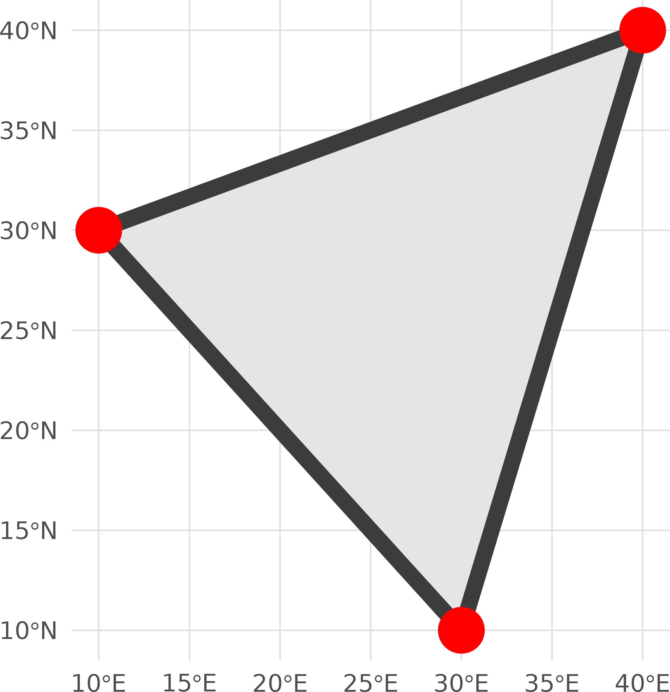
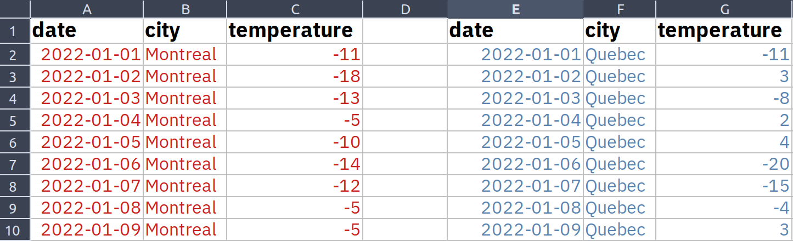

Data Management Best Practices
Journée IID des professionnels et professionnelles de recherche affiliés à l’Université Laval sur la gestion et l’usage des données de recherche
November 26, 2024

Research assistant at Takuvik (Laval University)
Remote sensing, modelling, data science, data visualization, programming
https://github.com/PMassicotte
philippe.massicotte@takuvik.ulaval.ca
@philmassicotte
https://fosstodon.org/@philmassicotte
www.pmassicotte.com
Examples of CSV and TSV files
This dataset contains 4 variables (columns). The first line generally includes the names of the variables.
A comma-separated values file (.csv).

A tabs separated values file (.tsv).

File naming basic rules
For sequential numbering, use leading zeros to ensure files sort properly.
- For example, use
0001,0002,1001instead of1,2,1001.

When file naming goes wrong!

The glitch caused results of a common chemistry computation to vary depending on the operating system used, causing discrepancies among Mac, Windows, and Linux systems.
…the glitch, had to do with how different operating systems sort files.
When file naming goes wrong!
Data files were sorted differently depending on the operating system where the Python scripts were executed.

Working with data from other people

Preserve information: keep your raw data raw
If a script changes the content of a raw data file and saves it in the same file, likely, the script will not work the second time because the structure of the file has changed.

Project directory structure

Why do we want tidy data?
Often said that 80% of the data analysis is dedicated to cleaning and data preparation!
Well-formatted data allows for quicker visualization, modeling, manipulation and archiving.

Tidy data
The main idea is that data should be organized in columns with each column representing only a single type of data (character, numerical, date, etc.).

Keep your data as rectangle tables
These two examples show the same data. One is arranged as two tables whereas the other is correctly formatted into a single rectangle table.
This sheet has one table.

This sheet has two tables.

Keep your data as rectangle tables
Do not be that person 😩😖😠😤💢😣🤦♀️🤦♂️😑😓

Publishing your data
There are at least two different ways to make your data available:
In a dedicated data paper.
In an appendix along with your paper (assuming that your paper is published in an open-access journal).
The Directory of Open Access Journals is useful for searching for open access journals.
Public announcement
Summary tables in a PDF article are not very useful!

You should rather provide the data in a way that is easily importable into a programming language as supplementary information (for example, a CSV file).
What is a data paper?
A data paper is similar to a traditional scientific paper.

What is a data paper?
The data associated with the paper is available online with an associated DOI.

Take home messages
Choose non-proprietary file formats (ex.:
CSV).Give your files and variables meaningful names.
Tidy and visually explore your data to remove obvious errors.
Backups your data externally as often as possible.
- Your hard drive will eventually crash, for sure!
Use a version control system (git) for your analysis scripts.
When possible, share the data and the scripts that were used in your research papers.